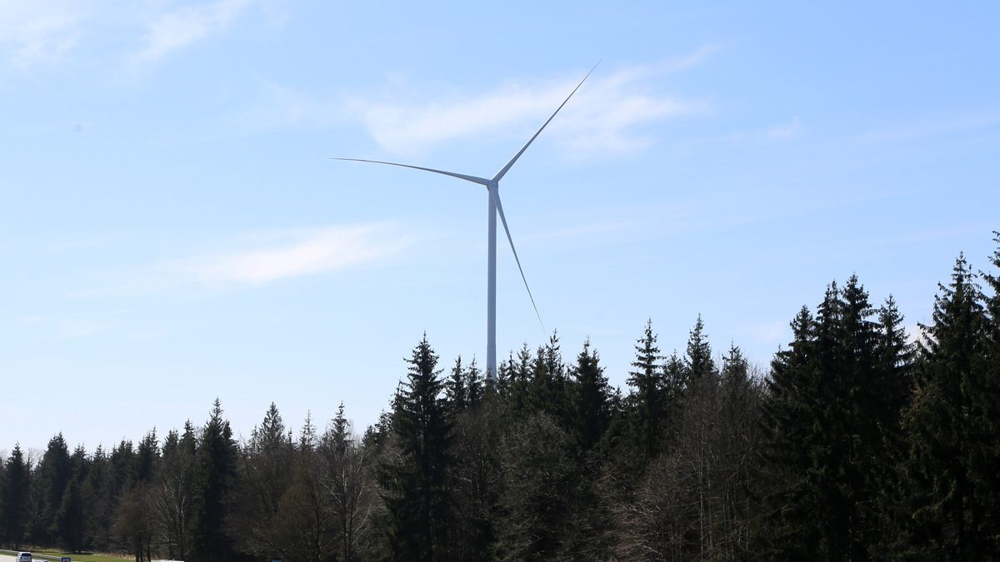

독일 지자체 3곳이 세운 풍력단지에 주민 450명, 2시간 반 만에 600만 유로 빌려줘

바이에른 '호폴딩어 포르스트' 3기 16.68MW, 연 6%·10년 후순위 대출로 주민 참여…작센안할트 베틴뢰베윈은 개발사 없이 주민 출자 풍력 최소 8기 추진
독일 바이에른주 뮌헨 남쪽의 자우어라흐·아잉·오터핑 3개 지자체가 사원으로 참여한 풍력회사 '뷔르거빈트 호폴딩어 포르스트(Bürgerwind Hofoldinger Forst)'가 주민에게서 후순위 대출 600만 유로를 모으는 데 2시간 반밖에 걸리지 않았다. 돈을 낸 약 450명은 모두 세 지자체 주민으로, 1인당 500~2만5,000유로를 연 6% 이자에 10년 만기로 빌려줬으며, 회사는 애초 3주 동안 지역 주민에게 먼저 청약을 받은 뒤 외부에 열 계획이었지만 그럴 필요가 없었다. 2011년 처음 구상된 이 사업은 2014년 도입된 바이에른의 '10H' 이격거리 규정 탓에 부지를 다시 찾고 참여 지자체도 4곳에서 3곳으로 줄었으나, 2023년 봄 건축허가를 신청해 10월 허가를 받았고 12월 에네르콘 E-160 3기(합계 16.68MW) 구매 계약과 재생에너지법(EEG) 입찰 낙찰을 잇달아 따냈고, 가동 1년 남짓인 지금 주민 투자자는 두 차례 배당을 받았다. 작센안할트주 할레 인근 베틴뢰베윈에서는 지역 주민 13명이 세운 '시민에너지(Bürgerenergie)'가 외부 개발사 없이 풍력 최소 8기를 계획하고 있으며, 총사업비 약 2,400만 유로의 상당 부분을 반경 50km 안 주민을 최소 500유로 또는 1,000유로부터 유한책임사원으로 받아 마련하고, 시에는 법정 수용성 부담금과 별도로 kWh당 0.05센트를 더 주기로 계약했다. 공동대표 카타리나 엘베르트는 "풍력이 더 들어올 게 분명하다면 주민도 이익을 봐야 한다"고 했지만, 시민에너지회사의 개발비를 최대 70%까지 지원하는 연방 제도가 2026년 말 끝나 올해 안에 신청해야 하고 건축허가 수수료만 10만 유로, 수익을 내려면 kWh당 7센트가 필요한데 최근 입찰가는 5센트에도 못 미친다고 설명했다. 호폴딩어 포르스트의 크라우드펀딩을 맡은 GLS 공동체은행의 악셀 슈미트는 주민이 지분으로 들어가는 시민풍력은 드물어지고 문턱 낮은 상품에 사람이 몰리는 흐름이라면서, 이번 성공은 세 지자체와 단체장들이 직접 주민을 모은 덕이라고 진단했다.
시민에너지 관점
세 지자체가 회사의 사원이 되고 단체장이 직접 주민을 모으자 450명이 2시간 반 만에 600만 유로를 내놓았다는 것은, 주민 참여를 막는 것이 돈이 아니라 믿음이라는 점을 보여 준다. 시민이 직접 개발하면 사업이 늦고 위험하다는 우려가 있지만, 호폴딩어 포르스트가 구상에서 허가 신청까지 12년이 걸린 것은 이격 규정과 부지 문제 때문이었고, 베틴뢰베윈이 가장 걱정하는 것도 개발비 최대 70% 지원이 끊기는 초기 위험 자금이다. 지자체가 개발 위험을 앞장서 떠안고 주민 몫을 처음부터 열어 두며, kWh당 0.05센트처럼 법정 몫 위에 지역 몫을 더 얹을 때 풍력은 외지 개발사의 사업이 아니라 지역의 자산이 된다. 국내에서도 지자체가 사업 주체로 나서고 시민 출자 사업의 초기 개발비를 공공이 받쳐 주는 제도를 서둘러 만들어야 한다.
출처: Erneuerbare Energien 2026-10-30 Katharina Wolf 원문 보기
ドイツの自治体3つが設立した風力発電所に住民450人、2時間半で600万ユーロを融資
バイエルン州「ホーフォルディンガー・フォルスト」3基16.68MW、年6%・10年の劣後ローンで住民が参加…ザクセン・アンハルト州ヴェッティン・レーベユーンでは開発事業者抜きで住民出資の風力少なくとも8基を計画
ドイツ・バイエルン州ミュンヘン南部のザウアーラッハ、アイング、オッターフィングの3自治体が社員として参加する風力会社「ビュルガーヴィント・ホーフォルディンガー・フォルスト（Bürgerwind Hofoldinger Forst）」が、住民から劣後ローン600万ユーロを集めるのにかかった時間はわずか2時間半だった。資金を出した約450人は全員が3自治体の住民で、1人500～2万5,000ユーロを年6%の利息、10年満期で貸し付け、会社はもともと3週間は地元住民を優先して募集し、その後に外部へ開く計画だったが、その必要はなかった。2011年に構想が始まったこの事業は、2014年に導入されたバイエルン州の「10H」離隔距離規定のために用地を探し直し、参加自治体も4から3に減ったが、2023年春に建築許可を申請して10月に許可を得て、12月にはエネルコンE-160の3基（計16.68MW）の購入契約と再生可能エネルギー法（EEG）入札の落札を相次いで実現し、稼働から1年余りの現在、住民投資家は2回の配当を受け取っている。ザクセン・アンハルト州ハレ近郊のヴェッティン・レーベユーンでは、地元の13人が設立した「市民エネルギー（Bürgerenergie）」が外部の開発事業者を入れずに少なくとも8基の風力を計画しており、総事業費約2,400万ユーロのかなりの部分を、半径50km以内の住民を最低500ユーロまたは1,000ユーロから有限責任社員として迎えて賄う考えで、市とは法定の受容性負担金とは別にkWhあたり0.05セントを上乗せして支払う契約を結んだ。共同代表のカタリーナ・エルヴェルト氏は「風車がさらに建つのが確かなら、住民も利益を得るべきだ」と語る一方、市民エネルギー会社の開発費を最大70%補助する連邦の制度が2026年末に終わるため年内に申請しなければならず、建築許可の手数料だけで10万ユーロ、採算にはkWhあたり7セントが必要なのに直近の入札価格は5セントにも届かないと説明した。ホーフォルディンガー・フォルストのクラウドファンディングを手がけたGLS共同体銀行のアクセル・シュミット氏は、住民が出資者として入る市民風力は少なくなり、ハードルの低い商品に人が集まる流れだとしたうえで、今回の成功は3自治体と首長たちが自ら住民を動かしたおかげだと分析した。
市民エネルギーの視点
3自治体が会社の社員となり、首長が自ら住民に呼びかけた結果、450人が2時間半で600万ユーロを出したことは、住民参加を阻むのはお金ではなく信頼だということを示している。市民が自ら開発すると事業が遅れ、リスクも大きいという懸念はあるが、ホーフォルディンガー・フォルストが構想から許可申請まで12年かかったのは離隔規定と用地の問題のためであり、ヴェッティン・レーベユーンが最も心配しているのも、開発費の最大70%補助が途切れる初期のリスク資金だ。自治体が開発リスクを率先して引き受け、住民の取り分を最初から開き、kWhあたり0.05セントのように法定の分配に地域の取り分を上乗せするとき、風力は外部の開発事業者の事業ではなく地域の資産になる。韓国でも自治体が事業主体となり、市民出資事業の初期開発費を公共が支える制度を急いで整えるべきだ。
出典: Erneuerbare Energien 2026-10-30 カタリーナ・ヴォルフ（Katharina Wolf） 原文を読む
德国3个市镇共同成立的风电场，450名居民两个半小时借出600万欧元
巴伐利亚“霍福尔丁格森林”3台机组共16.68MW，居民以年息6%、10年期次级贷款参与…萨克森-安哈尔特州韦廷-勒贝云不引入开发商，计划由居民出资建设至少8台风机
由德国巴伐利亚州慕尼黑以南的绍尔拉赫、艾英、奥特芬3个市镇作为股东参与的风电公司“霍福尔丁格森林公民风电（Bürgerwind Hofoldinger Forst）”，向居民募集600万欧元次级贷款只用了两个半小时。出资的约450人全部是这3个市镇的居民，每人以年息6%、10年期借出500至2万5,000欧元；公司原计划先用3周时间优先面向本地居民募集，再向外部开放，结果没有这个必要。该项目2011年开始构想，因巴伐利亚2014年实施的“10H”间距规定不得不重新选址，参与市镇也由4个减为3个，2023年春提交建设许可申请，10月获批，12月相继签下3台Enercon E-160（合计16.68MW）的采购合同并在《可再生能源法》（EEG）招标中中标；风机目前已运行一年多，居民投资者已获得两次分配。在萨克森-安哈尔特州哈雷附近的韦廷-勒贝云，由13名当地人成立的“公民能源（Bürgerenergie）”不引入外部开发商，计划建设至少8台风机，总投资约2,400万欧元中的相当一部分，打算吸收半径50公里内的居民以有限合伙人身份入股（最低500欧元或1,000欧元）来筹措，并与市政府签约，在法定接受度费用之外每千瓦时再多付0.05欧分。共同总经理卡塔琳娜·埃尔韦特表示“既然这里肯定还会建更多风机，居民也应当从中受益”，但她也说明，为公民能源公司补贴最多70%开发费用的联邦项目将于2026年底结束，必须在今年内申请；仅建设许可费就要10万欧元，要实现盈利每千瓦时需要7欧分，而最近一次招标价格连5欧分都不到。负责霍福尔丁格森林众筹的GLS共同体银行的阿克塞尔·施密特认为，居民以入股方式参与的公民风电已越来越少，门槛低的产品更受欢迎；此次成功要归功于3个市镇及其镇长们亲自动员居民。
市民能源视角
3个市镇成为公司股东、镇长亲自动员居民，450名居民就在两个半小时内拿出600万欧元，这说明阻碍居民参与的不是钱，而是信任。有人担心由公民自己开发会拖慢进度、增加风险，但霍福尔丁格森林从构想到提交许可申请用了12年，原因是间距规定和选址问题；韦廷-勒贝云最担心的，也是最多70%开发费补贴中断后的前期风险资金。当地方政府率先承担开发风险、从一开始就为居民留出份额，并像每千瓦时0.05欧分那样在法定分配之上再加一份地方收益时，风电就不再是外地开发商的生意，而是地方的资产。韩国也应尽快建立由地方政府担任项目主体、由公共部门支持公民出资项目前期开发费用的制度。
来源: Erneuerbare Energien（德国《可再生能源》杂志） 2026-10-30 卡塔琳娜·沃尔夫（Katharina Wolf） 查看原文
Residents lend 6 million euros in two and a half hours to a German wind farm set up by three municipalities
Bavaria's Hofoldinger Forst, three turbines totalling 16.68MW, took in local money as 10-year subordinated loans at 6%; in Saxony-Anhalt, Wettin-Löbejün's Bürgerenergie plans at least eight turbines with resident equity and no outside developer
Bürgerwind Hofoldinger Forst, a wind company whose partners are the municipalities of Sauerlach, Aying and Otterfing south of Munich in Bavaria, needed just two and a half hours to raise 6 million euros in subordinated loans from residents. All of the roughly 450 lenders live in the three municipalities, each putting in between 500 and 25,000 euros for 10 years at 6% interest; the company had planned to give locals three weeks of priority before opening the offer to outsiders, but never had to. First conceived in 2011, the project had to look for new sites after Bavaria introduced its "10H" distance rule in 2014 and shrank from four partner municipalities to three, but it applied for a building permit in spring 2023, won approval in October and in December signed a purchase contract for three Enercon E-160 turbines (16.68MW in total) and secured a tariff in the Renewable Energy Sources Act (EEG) auction; the turbines have now been running for a little over a year and the resident investors have received two payouts. In Wettin-Löbejün near Halle in Saxony-Anhalt, Bürgerenergie, founded by 13 local people, is planning at least eight turbines without bringing in an outside developer, aiming to fund a good share of the roughly 24 million euro cost by taking in residents within a 50km radius as limited partners from 500 or 1,000 euros, and it has signed a contract to pay the town 0.05 cents per kWh on top of the statutory acceptance levy. Co-managing director Katharina Elwert said "if more turbines are clearly coming here, people should profit too," but explained that the federal programme covering up to 70% of community energy companies' development costs ends in late 2026, so they must apply this year, that the building permit fees alone come to 100,000 euros, and that they need 7 cents per kWh while the latest auction did not even reach 5 cents. Axel Schmidt of GLS Gemeinschaftsbank, whose crowdfunding platform Hofoldinger Forst used, said wind farms with residents as equity partners have become rare as people flock to lower-threshold products, and credited this success to the three municipalities and their mayors mobilising residents directly.
Citizen Energy View
That 450 residents put up 6 million euros in two and a half hours once three municipalities became partners in the company and their mayors rallied residents directly shows that what holds back local participation is trust, not money. Some worry that citizen-led development is slow and risky, but Hofoldinger Forst took 12 years from idea to permit application because of distance rules and site problems, and what worries Wettin-Löbejün most is early-stage risk capital once support of up to 70% of development costs runs out. When municipalities take on development risk up front, open a share for residents from the start and add a local share on top of the statutory one, as with 0.05 cents per kWh, wind power becomes an asset of the community rather than a business for outside developers. Korea should move quickly to let local governments act as project owners and to have the public sector back the early development costs of citizen-financed projects.
Source: Erneuerbare Energien 2026-10-30 Katharina Wolf Read the original